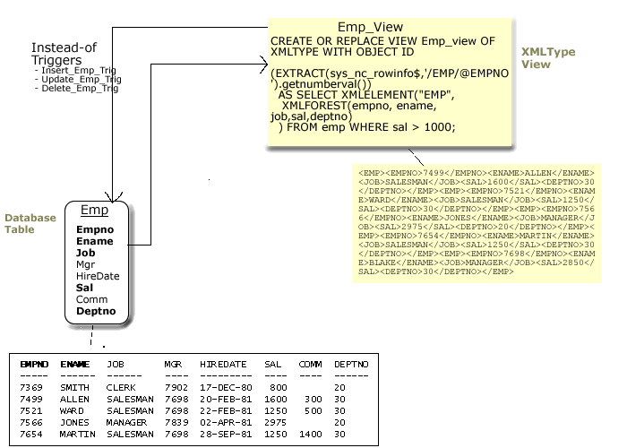
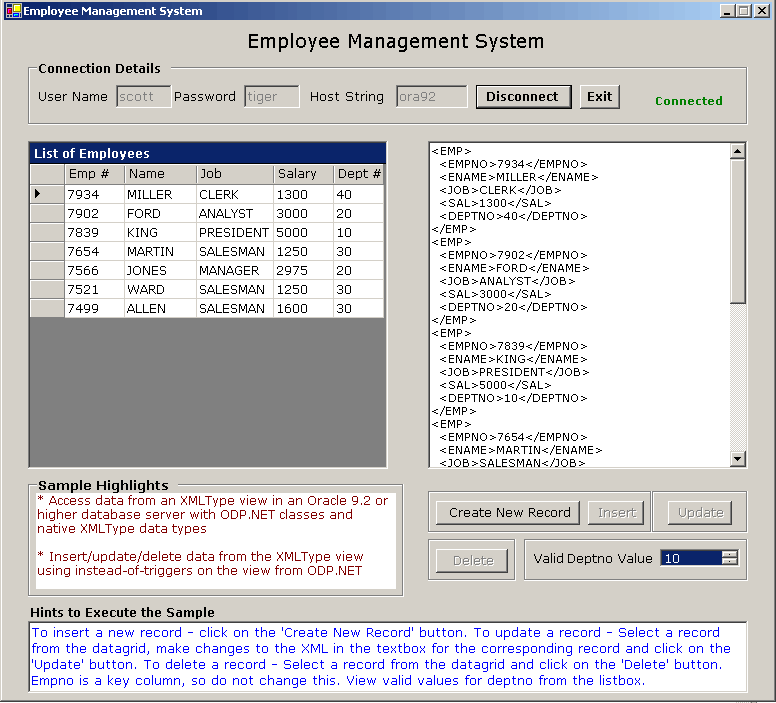
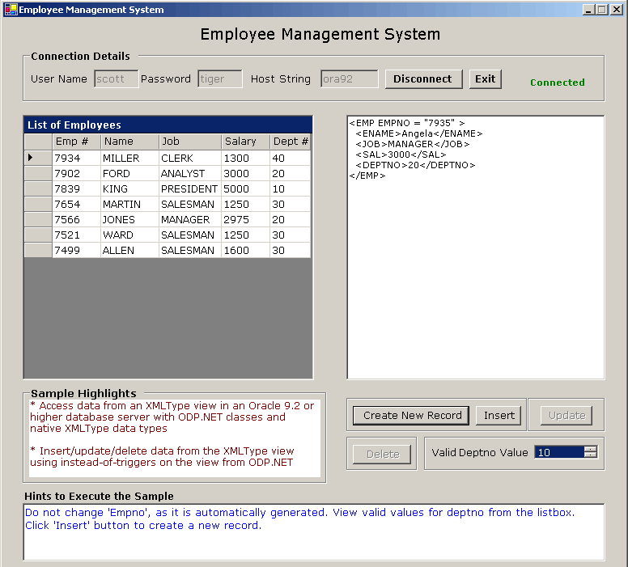
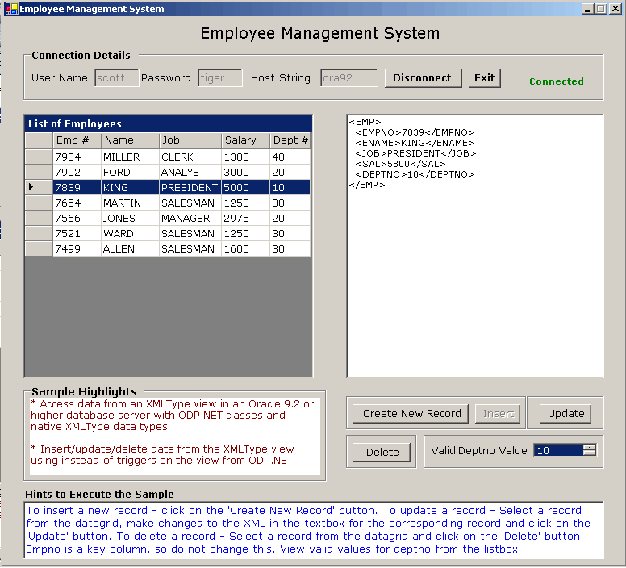

Accessing/Manipulating XML Data with Oracle XML DB - Employee Management System
Table of Contents
The purpose of this sample application is to demonstrate the
following:
1) Retrieval of XML data from an Oracle9i
Release 2 (9.2) database using XMLType views through Oracle Data Provider for
.NET (ODP.NET).
2) Usage of OracleXmlType class to
retrieve native XML data from an XMLType view.
3) Insert/Update/Delete operations on XML data from an XMLType
view using instead-of triggers from ODP.NET.
With Oracle9i Database
Release 2 (9.2) and higher, Oracle supports XML natively in the database
as its own data type. Oracle XML DB makes XML data retrieval and
manipulation easier to use and higher performing than other database solutions.
ODP.NET 9.2.0.4 and higher integrates with XML DB by storing XML data natively
in the database server ( XmlType) and in .NET (OracleXMLType) as
its own native XML data type. A native XML data type makes manipulating
XML easier because it is optimized for use specifically with XML as
opposed to data types that handle generic text, such as strings.
XML application performance can be improved
through the use of XMLType views. XMLType views convert
relational data into XML stored within the view. This
provides a performance savings as applications do not need to convert
from relational data to XML during run-time. Another advantage of XMLType
views is that you can exploit the Oracle XML DB feature without migrating your
base legacy data (relational model). Each row in the XMLType view corresponds
to an XMLType instance. Refer to figure 1, to get a
clear understanding on how XMLType view works:

Figure 1: Understanding the workings of an XMLType view
In figure 1, 'Emp' is a relational
table available in the 'Scott' schema. To optimize the Emp
table for use with XML, an XMLType view 'Emp_View' is created. On
querying the 'Emp_View', the data is retrieved in the form of XML.
For insert/update/delete operations, ODP.NET calls the instead-of
triggers created on Emp_View to modify data in the XMLType
view.
This ODP.NET sample, an Employee Management System, is a
windows application using C#. It uses the 'Scott' schema available
with the Oracle database. Some of the features provided by this sample include:
-
Querying data from
emp_view
-
Inserting a new employee into
emp_view
-
Updating/Deleting employee details in
emp_view
On establishing a successful connection
to an Oracle database, employee data from the 'Emp_View' (XmlType
view) is retrieved and displayed as XML and in a data grid. Users can
update/delete this XML in the XMLType view and the relational
table in the database with ODP.NET. The user can also insert a new employee
record using an XML document.
When this sample is run, the user should first
enter the appropriate connection details and click on the 'Connect' button
to connect to an Oracle database. After the database connection is established
successfully, the list of employees from the Emp_view (XMLType
view) is displayed in tabular (DataGrid)
and XML format, as shown in Figure 2.

Figure 2: Screenshot after connection is established
To insert a new record into the 'Emp_View' XMLType
view using an XML document, click on the 'Create New Record' button. A sample
XML record appears in the textbox that can be modified to have the required
data within the appropriate tags, as shown in Figure 3 . Please
refer to the hints displayed in the 'Hints to Execute the Sample' text on the
application screen for the instructions to perform the current operation.

Figure 3: Displays sample XML record for insertion
To save the new record click on the 'Insert' button. The new data will
be reflected in the datagrid and the XML document.
To update a record, the user can select a record from the
datagrid. Its corresponding XML appears in the textbox. The user can modify the
XML record displayed in the text area, as shown in Figure 4. Refer
to the 'Hints to Execute the Sample' text for more details. The user can click
on the 'Update' button to update the data in the database. The updated
data will be reflected in the datagrid and the XML document.

Figure 4: Displays selected record for update
To delete a record, the user can select a record from the
datagrid and click the 'Delete' button. The changed data will
be reflected in the datagrid and the XML document.
Unzip
XmlViewSample.zip using Winzip or
the command utility to a convenient directory referred to as <Extract_Dir>.
Extraction of the zip file results in the creation of "XmlViewSample"
directory. Refer Description of Sample Files
section for more details.
1. This sample uses 'Scott' sample schema
available with the Oracle databases. It uses 'Emp' and 'Dept'
tables. In case you do not have the 'Scott' schema, you can alternatively
connect to a different database user and create the required tables by running
the demobld.sql script available at <Extract_Dir>\XmlViewSample\setup
at SQL*plus prompt:
SQL> @<Extract_Dir>\XmlViewSample\setup\demobld.sql
<Extract_Dir> - is the directory where you
have extracted the
XmlViewSample.zip
file.
2. To create the XMLType view and the instead-of triggers for
data manipulation on the XMLType view, run the CreateView.sql script
available under <Extract_dir>\XmlViewSample\setup at the SQL*prompt:
SQL>
@<Extract_Dir>\XmlViewSample\setup\CreateView.sql
The following database objects will get created on
successfully running of this script:
| Database Object Name |
Description |
Emp_View |
XMLType view based on the 'Emp' table |
Insert_Emp_Trig |
Instead-of trigger for insert operation on the Emp_View |
Update_Emp_Trig |
Instead-of trigger for update operation on the Emp_View |
Delete_Emp_Trig |
Instead-of trigger for delete operation on the Emp_View |
1. Ensure completion of
the Database setup.
2. Open XmlViewSample.sln
using Visual Studio .NET from the <Extract_Dir>\XmlViewSample\src
folder.
3. Ensure that
the following .NET Component References have been added to XmlViewSample
project:
System,
System.Data,
System.Drawing,
System.Windows.Forms,
System.XML,
Oracle.DataAccess.
To add the above .NET Components
a)Go to Menu->View-> Solution Explorer.
b)Right click on XmlViewSample project, choose 'Add
Reference'.
c)Choose the above .NET Components from the list displayed.
d)Click 'Select', then OK.
e) The chosen .NET component gets added to the project.
5. Build and run the sample
by pressing Ctrl+F5. Refer to Using the Sample section on how to use this sample.
1. When running this sample, enter the connection details.
Provide the username and password for the schema that contains the Emp
and Dept tables. Enter the host string as appropriate to
your database setup.
2. After providing the connection details, click on the
'Connect' button. In case the connection could not be established successfully,
the connection status is displayed as 'Not Connected' in red color. On
successful connection, the connection status is displayed as 'Connected' in
green color- the DataGrid and textArea are populated with data from the Emp_View
and the UI controls are enabled.
3. To update a record, the user can navigate to the row in the
datagrid, that he/she wishes to update. Its corresponding XML appears in the
textbox. The user can modify the XML record. To change the value of deptno
the user can check the value from the list of valid deptno. Do not
modify the empno as it is a key column. Also, refer to the hints
given on the screen. Click on the 'Update' button to update the data in the
database. On successful update, a confirmation message is displayed. If any
error occurs, the error message is displayed to the user.
4. To insert a new record, the user can click on the 'Create
New Record' button. On clicking this button, the text area generates a
new XML record that can be edited by the user. Do not modify 'empno' as it
is a key column that is produced automatically by the application as a
unique value. The user can view the list of valid 'deptno' from the list. Refer
to the hints given on the page for more details. After editing the sample
record, the user can click on the 'Insert' button to save the data in the
database. On successful insertion of the record, a confirmation message is
displayed. If any error occurs, the error message is displayed to the user.
5. To delete a record, the user can navigate to the row in the datagrid, which
he/she wishes to delete. The corresponding XML of that row appears in the
textbox. The user can click on the 'Delete' button. A confirmation dialog
appears, with Yes/No option. On selecting 'Yes' the record(s) gets deleted and
a confirmation message is displayed. On selecting 'No', no deletion
happens.
6. If the user wants to change the database connection, then
he/she can click on the 'Disconnect' button and connect to another database by
providing the connection details.
7. To exit the application, click on the 'Exit' button.
Following is the directory structure of the XmlViewSample.zip
:
|
Directory
|
Files
|
Description
|
XmlViewSample\doc\ |
Readme.html |
This file |
otn.css |
Cascading Stylesheet applied to Readme.html |
XmlViewSample\doc\images\ |
*.gif |
Screenshots used in the Readme.html
file |
XmlViewSample\setup\ |
CreateView.sql |
Contains the SQL script to create the
XMLType view and instead-of triggers |
demobld.sql |
Contains the SQL script to create the
'Emp', 'Dept' required for this sample |
XmlViewSample\src\ |
EmpForm.cs |
Contains the GUI for this sample |
ManageEmp.cs |
Contains the code that is used to
access relational data as XML and use XML to manipulate relational data |
ConnectionMgr.cs |
Contains code that maintains the
connection to an Oracle database |
EmpForm.resx |
Contains .NET XML resource template |
XmlViewSample.sln |
Contains Microsoft Visual Studio
solution |
XmlViewSample.csproj |
Contains C# project file |
|